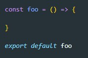
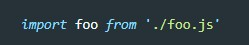

Допустим у нас есть два файла JavaScript (index.js и music.js) Библиотеку с video нам надо импортативать в главнй JS файл - index
Рассмотрим сначала код файла music

Сначала идет ключевое слово export - это значит что мы экспортируем нашу функцию, которую записали в переменную musicPlayerInit
Затем идет тело функции (обыкновенная стрелочкая функция которая в консоль выводит текст)
Теперь для того что бы импортировать нашу функцию в главной файле, в самом верху прописываем такую строку:

Сначала указываем ключевое слово import затем в фигурных скобках указываем имя функции которая была экспортирована из файла music.js ВАЖНО что бы имя экспортируемой и импортируемой функциисовпадало
Затем указываем откуда мы ее импортируем, указываем путь до файла относительно главного файла
Так же в файле html в строке, где мы указываем ссылку до нашего файла index.js в теге script необходимо указать свойство: type="module" а так же свойство defer

Теперь все что нам осталось это вызватьнашу функцию:
Так же можно импортировать функцию по дефолту:

Сначала мы инициализируем функцию, и только потом мы экспортируем ее по дефолту
Теперь в главной файле импорт будет выглядеть вот так:

Мы уже не используем фигурные скобки, более того уже нет необходимости что мы название функции в экспортируемом файле соответствовало названию функции в импорте. Мы можем использовать измененное имя:
В вызове функции теперь имя должно совпадать с тем что мы указали в import


Т.е. мы обращаемся внутри экспортируемой функции к самой себе и создаем у нее новый метод, который обращается к объекту внутри функции.
Теперь для того что бы получить элемент в файле куда импортировали script мы просто обращаемся к функции импорта и вызываем этот метод